直線型
- 1
 F手前面 時計回り
F手前面 時計回り
セクシームーブ
- 2
 R右列 上へ
R右列 上へ - 3
 U上段 左へ
U上段 左へ - 4
 R′右列 下へ
R′右列 下へ - 5
 U′上段 右へ
U′上段 右へ
- 6
 F′手前面 反時計回り
F′手前面 反時計回り
黄色エッジの直線を横向きに置きます。コーナーの色は問いません。
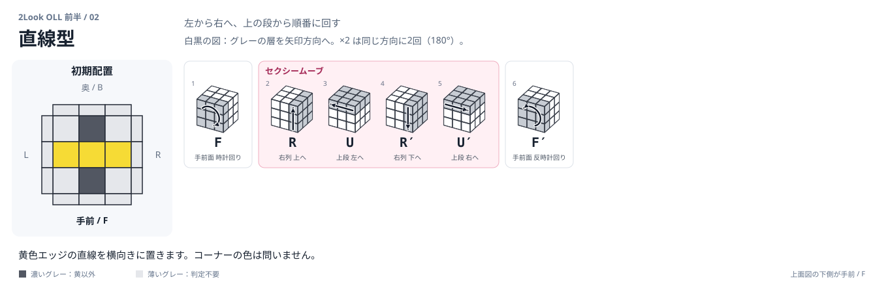
PHASE 03
iPhone：Safariの共有メニュー →「ホーム画面に追加」。Android：ブラウザのメニュー →「アプリをインストール」または「ホーム画面に追加」。
下2段がそろったら、黄色センターを上に持ちます。まず十字、次にコーナーの黄色を上へ向けます。
F手前面 時計回りR右列 上へU上段 左へR′右列 下へU′上段 右へF′手前面 反時計回り黄色エッジの直線を横向きに置きます。コーナーの色は問いません。

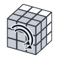
Fw手前2層 時計回りR右列 上へU上段 左へR′右列 下へU′上段 右へ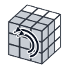
Fw′手前2層 反時計回り黄色エッジを右と手前に置きます。Fw は手前2層を一緒に回します。
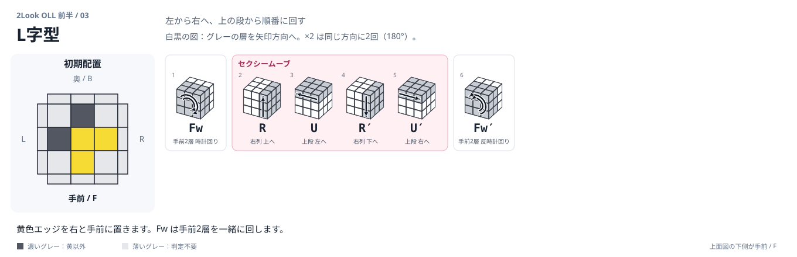
R右列 上へU上段 左へR′右列 下へU′上段 右へU′上段 右へF手前面 時計回りR右列 上へU上段 左へR′右列 下へU′上段 右へF′手前面 反時計回り黄色エッジが0個。L字の手順 → U′ → 直線の手順の順に回します。
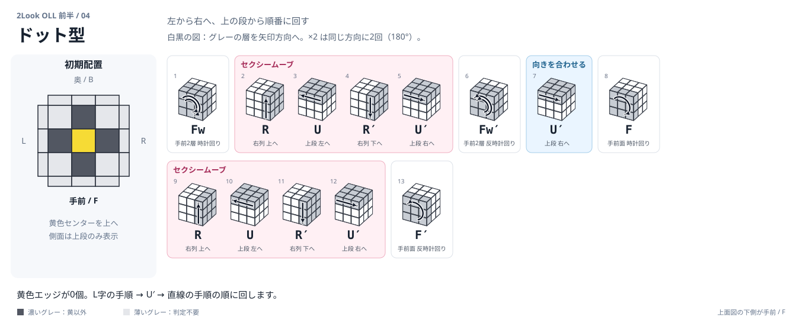
R右列 上へU上段 左へR′右列 下へU上段 左へR右列 上へ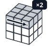
U2′上段 右へR′右列 下へ上面の黄色コーナーは手前左。右側の奥に黄色が見える向きに置きます。
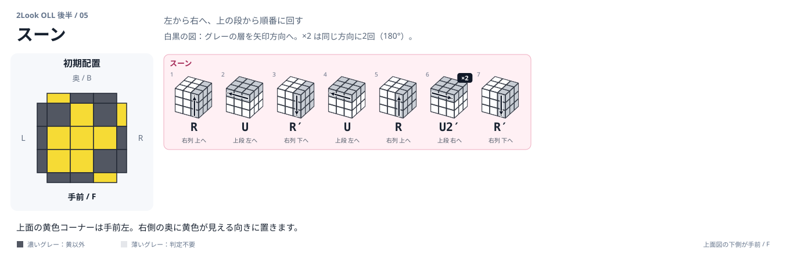
R右列 上へR′右列 下へU′上段 右へR右列 上へU′上段 右へR′右列 下へ上面の黄色コーナーは奥右。左側の奥に黄色が見える向きに置きます。
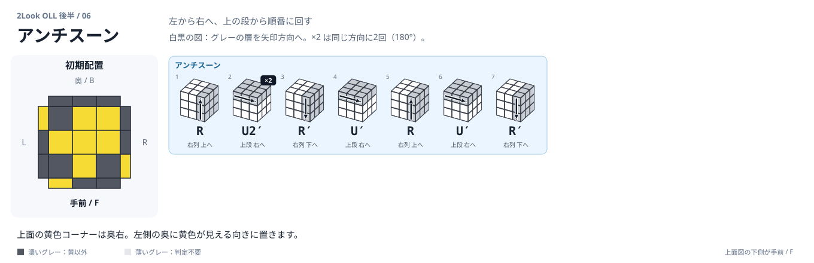
R右列 上へR′右列 下へU′上段 右へR右列 上へU上段 左へR′右列 下へU′上段 右へR右列 上へU′上段 右へR′右列 下へ奥と手前の側面に黄色が2個ずつ。アンチスーンの途中にセクシームーブを挟みます。
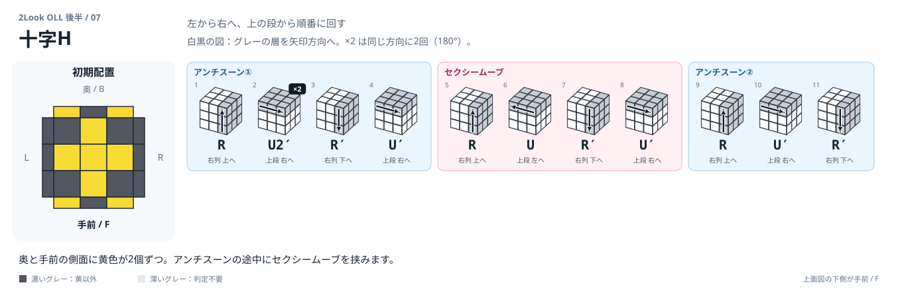
F′手前面 反時計回り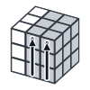
Rw右2層 上へU上段 左へR′右列 下へU′上段 右へ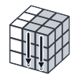
Rw′右2層 下へF手前面 時計回りR右列 上へ黄色コーナーが奥右・手前左にある向き。ほぼセクシームーブの最初だけ右2層です。
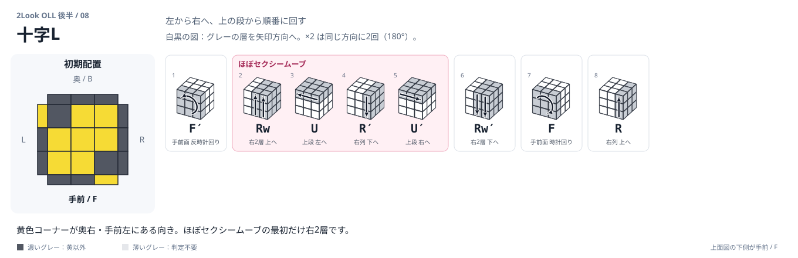
U上段 左へR′右列 下へU′上段 右へF手前面 時計回りR右列 上へF′手前面 反時計回り上面の右側2個のコーナーが黄色。奥・手前の左端にも黄色が見えます。
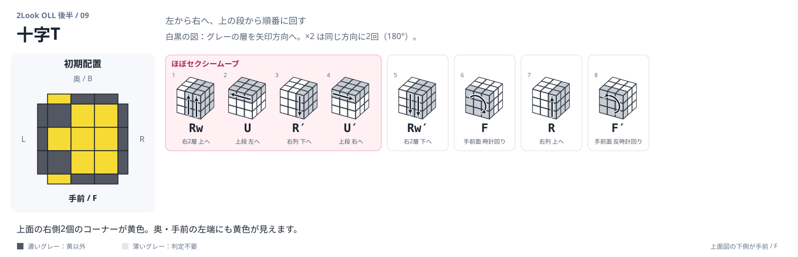
R右列 上へ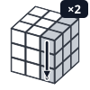
R2′右列 下へU′上段 右へ R2右列 上へU′上段 右へR右列 上へ
R2右列 上へU′上段 右へR右列 上へ左側に黄色が2個、奥と手前の右端に黄色が1個ずつ。リズム：12 / 21212 / 21。
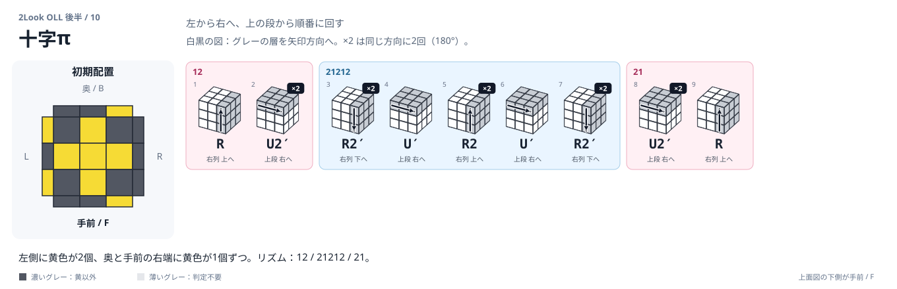
R2右列 上へ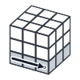
D下段 右へR′右列 下へ U2上段 左へR右列 上へ
U2上段 左へR右列 上へ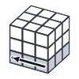
D′下段 左へR′右列 下へU2上段 左へR′右列 下へ奥の2個のコーナーが黄色。手前の側面に黄色が2個見える向きに置きます。
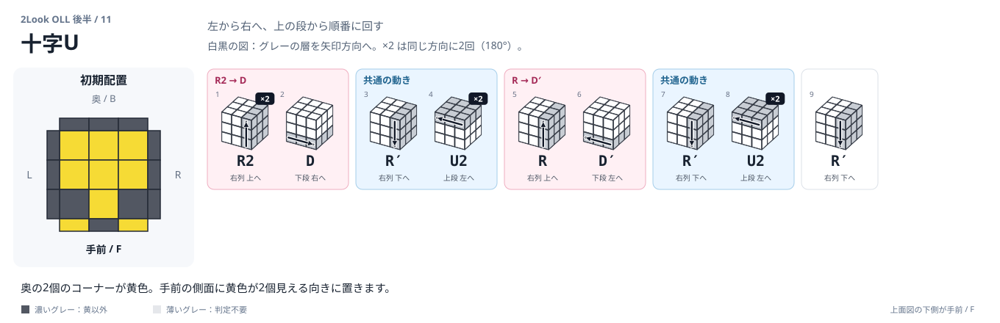
{kind=link}
{kind=link}
{kind=link}
{kind=link}
{kind=link}
{kind=link}
{kind=link}
{kind=link}
{kind=link}
{kind=link}